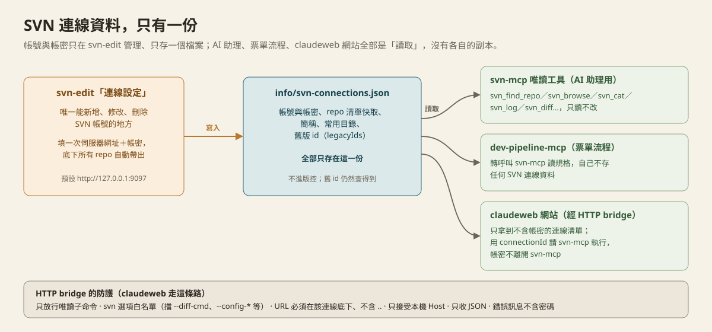

這是給 AI 助理用的一個小工具，讓它能幫你查 SVN 上的程式碼跟規格文件。這份手冊用白話文說明它怎麼運作、能查什麼、什麼時候該用哪一種問法。
SVN 是公司存放程式碼跟規格文件的地方——每個檔案、每一次修改都記錄在上面。過去要查這些東西，得自己開 SVN 用戶端一層一層點。
現在你可以直接用中文跟 AI 助理說「幫我看某份規格書寫了什麼」，AI 助理會透過 svn-mcp 這個工具直接執行電腦上的 svn 指令把資料抓回來，整理成看得懂的白話文回答你。
AI 助理用的這組查詢工具對 SVN 完全唯讀，不會幫你改動或刪除任何東西，也不依賴任何額外的網站服務——直接呼叫電腦上已經裝好的 svn 程式，斷網、斷服務都不影響它查資料。
另外有一個給你自己用的網頁編輯器 svn-edit（見第 06 節），可以直接編輯 SVN 上的檔案；它的寫入動作只有你在網頁上按按鈕才會發生，AI 助理碰不到。
一次查詢，經過這六個步驟。你完全不需要知道中間發生了什麼，只是說明給你聽：
連線設定只需要登記你的SVN 帳號（伺服器網址＋帳密），這個帳號看得到的所有專案庫（repo）會自動帶出來，不用一個一個登記；伺服器上新增 repo 時按一下「重新載入」就會補進來。
你問問題時只要說專案的名字——repo 名稱、舊版取的名稱（例如「專案甲」）、你自己取的簡稱（例如「丙銀」），甚至是常用目錄的暱稱（例如「後端規格」）都行——AI 助理會先用 svn_find_repo 找到對的專案跟目錄，再去查，不會亂猜。
SVN 伺服器上這個專案庫的名字。
舊版「一個 repo 一筆連線」時取的名字，升級後仍然可以用。
在 svn-edit 專案清單點「簡稱」取的暱稱，只存在你自己的電腦。
深層資料夾加星星後取的名字，AI 直接拿到路徑，不用一層一層找。
找不到、或有好幾個都像時，AI 助理會列出候選先跟你確認。
不給關鍵字就列出常用專案：你加星星的在前，其次是最近開過的。
連線只要在 svn-edit 設定一次。AI 助理、票單流程、claudeweb 網站讀的是同一份連線設定，不用在每個地方重複填帳密；要新增、修改或刪除帳號，一律到 svn-edit 的「連線設定」。claudeweb 網站的 SVN 頁面現在只能瀏覽，旁邊的「連線管理」按鈕會直接打開 svn-edit。舊版留下的連線代號仍然有效，不用重新設定。

總共 3 大類、8 個工具。每一類點開來看，裡面有實際的工具名稱（給負責設定的 IT 人員對照用）跟白話說明。
找專案、目前有哪些連線、連不連得上
▶svn_find_repo用名字找專案：同時比對 repo 名稱、舊名稱、你的簡稱、常用目錄暱稱，回傳該用哪個連線與常用目錄的路徑（提到專案名稱時 AI 會先用這個）svn_list_connections列出所有可用的專案庫（每個 repo 一筆，附簡稱、星星、常用目錄；不含帳號密碼）svn_test_connection實際測試某個連線連不連得上（真的執行一次查詢，不是只看設定檔有沒有資料）看有哪些檔案、讀檔案內容
▶svn_browse列出某個路徑底下的檔案/資料夾清單svn_cat讀取某個檔案的內容——純文字檔直接讀出來；Word/Excel/PDF 這類文件會先存成暫存檔，交給既有的文件讀取流程處理svn_doc_images把 Word/Excel 文件存成暫存檔，交給既有流程抽取裡面的圖片——規格書的畫面設計、流程圖常常藏在圖片裡誰、什麼時候、改了什麼
▶svn_log查詢修訂記錄（作者、時間、說明）svn_diff比較兩個版本之間差了什麼規格書（SA/SD）常常用 Word 文件撰寫，畫面設計、流程圖多半是用圖片貼進去的——只讀文字內容會漏掉這些關鍵資訊。 這支工具會提醒連圖片一起讀，走完整流程：
除了查詢，你也可以不用自己 checkout，直接把 SVN 上的某一份檔案（Word、Excel、md、txt、csv）取出來、用你熟悉的軟體修改，改完一鍵傳回 SVN。
這是一個獨立的小程式 svn-edit，在你自己的電腦上開一個網頁（http://127.0.0.1:9097）讓你操作。用的是真正的 Word／Excel，所以圖片、流程圖、公式都不會走樣。
怎麼開始：雙擊 svn-edit.exe（或由工程師設定成連上 svn-mcp 時自動啟動），會開出一個獨立的「SVN 遠端編輯」桌面視窗（沒有網址列，關掉視窗服務很快就會自動結束）。第一次使用先按「管理連線」，填伺服器網址（工程師會給你）和你自己的帳號密碼，可以先按「測試連線」；儲存前一定會先實際連線測試，連不上就不會存，並顯示原因。成功後你看得到的所有 repo 就會自動出現；以後伺服器上新增了 repo，按「重新載入」就會補進來，公司換網址時按「編輯」改網址即可（簡稱、星星、常用目錄都不會掉）。如果公司的 SVN 是用電腦登入帳號驗證，帳號密碼也可以留空，系統會直接用你登入電腦的帳號。
找檔案：按「瀏覽 SVN 目錄」，先看到專案清單，有「近期 SVN」與「星星 SVN」兩個分頁、一個搜尋框（名稱、舊名稱、簡稱都能搜，多個關鍵字用空白隔開）；點 ☆ 把常用專案放到最上面（可拖曳 ⋮⋮ 調整順序）、點「簡稱」取自己的暱稱。點進專案後逐層點資料夾，點到檔案就跳出確認卡；.pdf 點 👁 只能開啟檢視，不能編輯。也可以從 dev-pipeline 待人工處理清單上方的「編輯 SVN 上的規格書」連結直接進來。經常要傳到的深層資料夾，在「從 SVN 選擇資料夾」面板按 ☆ 加入這個專案的常用目錄（還能取暱稱），之後一點就跳過去。
同步本地端（選用）：如果你平常另外用 TortoiseSVN 把專案 Checkout 在自己電腦上，可以在「管理連線」面板最下方打開「同步本地端」開關，再按「選擇資料夾…」用點選的方式替專案指定那個資料夾（一個專案可以指定多個）。打開之後，編輯上傳成功、或刪除檔案成功時，svn-edit 會自動幫你更新那個資料夾，本地端的檔案馬上跟遠端一致。還沒有本地資料夾也沒關係：在「瀏覽 SVN 目錄」進到想追蹤的目錄，按「⬇ Checkout 到本地」就能建立。關掉開關就維持原本的樣子，只改遠端、不碰你的電腦。萬一指定的資料夾不是 SVN 工作目錄（沒有 SVN 追蹤）、沒設定、不存在，或不是這個專案的資料夾，會跳出警示告訴你原因並且不更新；遠端的上傳或刪除仍然成功，不會因此失敗。
Word／Excel 還沒關就按上傳，會被擋下，避免傳到存到一半的檔案。
跟開啟時一模一樣就不會上傳，不會產生空的版本紀錄。
說明是版本紀錄的一部分一定要寫；從票單進來會自動預填票號。
你編輯期間有人傳了新版本，一律不蓋掉對方；可以「下載最新版另存」手動比對。
不想改了，按兩次確認就會解除鎖定、刪掉暫存資料夾。
編輯到一半電腦當機，重開 svn-edit 還找得到，可繼續上傳或放棄，不會被自己的鎖卡住。
檔名帶版本號（_v0.7）時，上傳前勾「升級版本」：舊版自動放進同目錄的 old 資料夾，新版變 _v0.8（v0.9 會進位成 v1.0），同一個版本完成；新檔名可以自己改，中途失敗不會弄丟你的編輯。
一次選多個檔案或整個資料夾（也可以直接拖曳進來）傳到 SVN，只產生一個版本；遠端已有同名檔案時會先請你確認才更新成新版本，Word、Excel 新檔會自動設成「編輯前需先鎖定」；檔案很多時逾時會自動放寬，一次最多 30 萬個檔案。
md 用 VS Code、csv 用記事本（避免 Excel 存檔把中文弄成亂碼），其餘用預設程式；只影響這個工具開檔，不會改你電腦的檔案關聯。
可開關（預設關閉）。開啟後，上傳或刪除成功就自動更新你電腦上的 SVN 資料夾，只更新這次動到的檔案。一個專案可以設定多個本地資料夾（用點選的，不用貼路徑），會挑對應位置包含這個檔案的那一個；資料夾沒有 SVN 追蹤、沒設定或對不上時會跳警示並不更新。
瀏覽 SVN 目錄時按「⬇ Checkout 到本地」，把這個遠端目錄取到你的電腦並建立 SVN 追蹤。點選放在哪個資料夾底下、選範圍（整個目錄／只取這一層／只建立追蹤），完成後可直接設成同步目錄。選到已經有內容的資料夾時會拒絕，不會弄亂你原有的檔案。
要編輯檔案的確認卡上會顯示這個檔案的完整 URL，按「複製位置」就整段複製，貼到文件、小烏龜都能直接用。
瀏覽 SVN 目錄時勾選一個或多個檔案（可全選），按「刪除所選」，填刪除說明並再確認就能一次刪除，只會產生一個版本。檔案和資料夾都能刪（刪資料夾會連同底下所有檔案一起刪，確認視窗會特別提醒），只要有一個項目正在編輯（資料夾底下有檔案在編輯也算）或被鎖定，整批都不會刪。之後仍可從 SVN 歷史還原；同步開關開著時，本地的檔案也會一起消失。
啟動與結束時自動清掉檢視檔、上傳殘留；進行中的編輯一律保留，不會被清掉。
需要準備：電腦上要有 svn 命令列工具（安裝 TortoiseSVN 時勾選 command line client tools）；請用你自己的 SVN 帳號——SVN 的「鎖定」是綁帳號的，這樣才分得出是誰正在編輯同一份檔案。
幾個常見情境，示範怎麼問、AI 助理在背後做了什麼。
svn_cat → svn_doc_images
svn_log → svn_diff
/docs/後端規格，裡面有這些檔案……
背後呼叫：svn_find_repo → svn_browse
svn_find_repo（關鍵字留空，列出常用專案）
old，新版 v0.8 成為最新版本。
這一段全是你在網頁上按按鈕，AI 沒有參與
AI 助理用的查詢工具不會：它們都只查詢、不寫入，AI 沒有任何能改動 SVN 的工具。 第 06 節的 svn-edit 是另一個獨立的小程式，只有你自己在網頁上按按鈕才會寫入（包含刪除檔案，刪除要填說明並再確認一次，刪掉的檔案仍可從 SVN 歷史還原），而且每次都要你填說明、通過檢查才會送出，每個動作都留稽核紀錄。「同步本地端」只會對你設定的資料夾做 SVN 更新，開關預設關閉。
因為你的帳號底下可能有幾十個專案，同一個路徑在不同專案底下是完全不同的內容。AI 助理會先用名字搜尋，找不到或有好幾個都像時不會用猜的，而是列出候選請你確認。你可以在 svn-edit 替常用專案加星星、取簡稱，下次直接說簡稱就能一次找到。
因為規格書的畫面設計、流程圖常常是用圖片貼進文件裡的，只讀文字內容會漏掉這些重點，這支工具會提醒連圖片一起讀，避免看漏。
可以先用「測試連線連不連得上」這個工具確認，常見原因是網路/VPN 沒開、帳號密碼過期，或連線設定的網址打錯。一次上傳非常多檔案時若顯示逾時，請分批上傳，或請工程師調高 SVN_TIMEOUT_MS。
Word、Excel 關閉的瞬間有時還來不及清掉它的暫存標記檔，稍等幾秒再按一次即可。如果還是不行，確認沒有其他視窗或背景程式還開著這個檔案。
不會。你的修改還在暫存資料夾裡。可以按「下載最新版另存」取得對方的版本，手動比對、把需要的內容合在一起，再重新上傳。Word、Excel 這類檔案無法自動合併，所以系統寧可擋下，也不會蓋掉別人的修改。
代表那位同事正在編輯同一份 Word／Excel，請等對方上傳或放棄後再試。如果顯示的是你自己的帳號，通常是上次編輯沒有正常結束留下的鎖，請先看控制頁有沒有殘留的編輯項目可以處理，或到 TortoiseSVN 手動解除鎖定。
每位同事在自己的電腦上準備好 svn 命令列工具，打開 svn-edit 控制頁，按「管理連線」填伺服器網址和自己的帳號密碼，就能用該帳號看得到的所有 repo（設定、星星、簡稱只存在各自的電腦上）。請不要共用同一個 SVN 帳號，否則鎖定就分不出是誰在編輯。
常見原因：新檔名已經存在於同一個資料夾，或 old 資料夾裡已經有同名的舊版。畫面會寫出原因，可以自己改新檔名再試。檔名沒有版本號也能升級——新版會自動加上 _v0.2，舊版放進 old 時補 _v0.1。升級過程中任何一步失敗，都會把你編輯好的內容放回去，不會遺失。
代表遠端已經成功了，只是你電腦上的資料夾沒有被更新。警示會寫出原因，常見的有：①「沒有 SVN 追蹤」——設定的資料夾不是用 Checkout 取得的（裡面沒有 SVN 的紀錄），請用 TortoiseSVN 把專案 Checkout 到那裡，或到「管理連線」改成正確的資料夾；②「還沒設定本地目錄」——到「管理連線」最下方替這個專案填資料夾；③「不包含這個檔案」——填的資料夾不是這個專案的，或只 Checkout 了別的子資料夾；④「發生衝突」——你電腦上同一個檔案也有修改，請用 TortoiseSVN 在那個資料夾按右鍵「解決衝突」。不想要自動更新時，把「同步本地端」開關關掉即可。
為了不弄亂你原有的檔案，Checkout 只能放進「還不存在」或「空的」資料夾：已經有內容、已經是 SVN 工作目錄、或在另一個 SVN 工作目錄裡面，都會拒絕並說明原因。換一個新的資料夾名稱，或選一個不在 SVN 工作目錄內的位置就可以。如果那個資料夾本來就是這個專案的工作目錄，不用再 Checkout，直接到「管理連線」指定它即可。
SVN 刪除只是產生一個新版本，歷史紀錄都還在。用 TortoiseSVN 在該資料夾按右鍵「顯示記錄」，找到刪除的那一版，對被刪的檔案選「Revert changes from this revision」或從前一版複製回來即可。
不會。星星、簡稱、常用目錄都是用「專案名稱」記的，不綁網址；在「管理連線」編輯那個帳號、把網址改成新的就好。
可以。第一次啟動 svn-edit 或寫入設定時會自動升級：同一個伺服器＋同一個帳號的合併成一個帳號，舊名稱與舊連線代號保留成別名，原檔會先備份起來；其他工具照舊用原本的名稱也找得到。